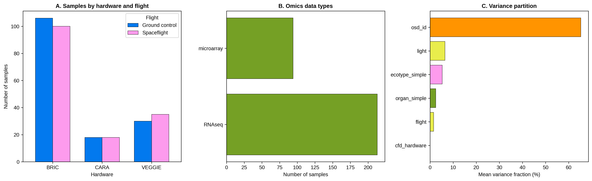
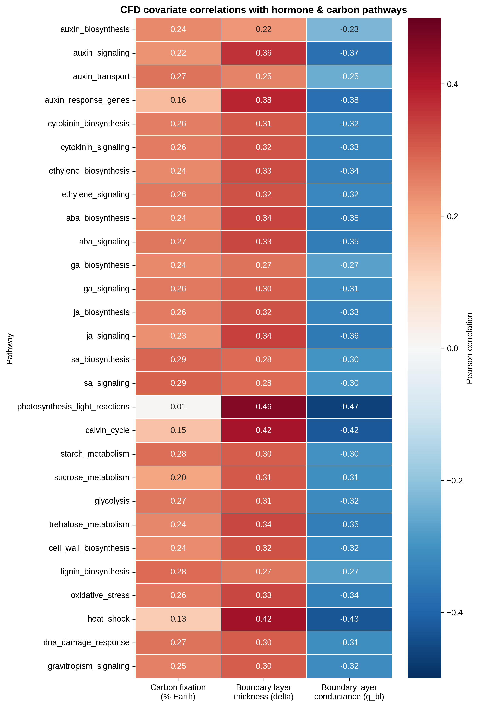
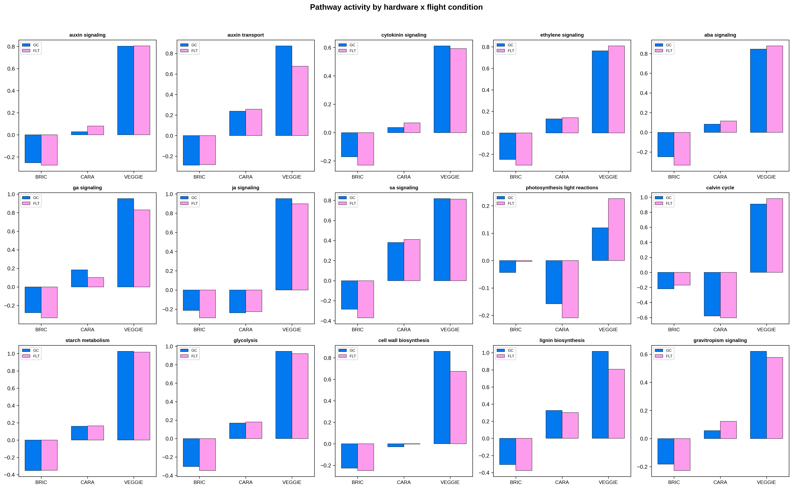
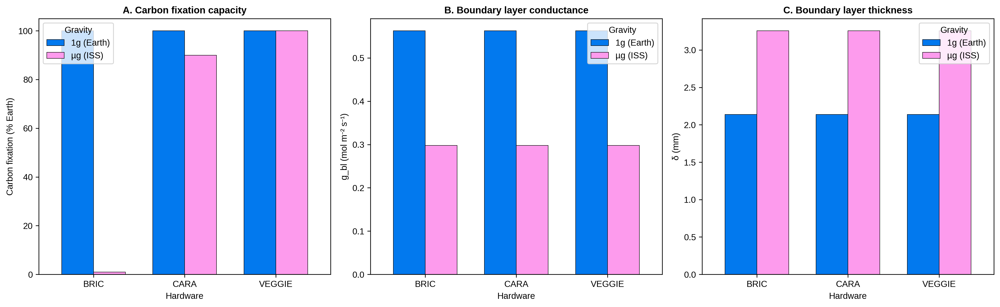

Spaceflight imposes unique mechanical and atmospheric stresses on plants, but disentangling the effects of microgravity from those of growth hardware has remained a challenge. We present a multi-omics meta-analysis of 451 Arabidopsis thaliana spaceflight samples (Col-0 and WS ecotypes) across 16 NASA OSDR studies, integrating RNA-seq and microarray data with computational fluid dynamics (CFD) gas-exchange modeling and single-cell RNA-seq deconvolution. Using a limma-voom mixed-effects model with study as a random effect (n = 307 expression-profiled samples, 25,453 genes), we identify hardware as the dominant source of transcriptional variation after study: CARA and Veggie hardware show 7,675 and 5,532 downregulated genes respectively versus BRIC, dwarfing the 476 up / 264 down genes altered by flight itself. CFD modeling reveals that sealed BRIC hardware limits carbon fixation to ~1% of Earth rates in microgravity, versus ~90% for semi-permeable CARA and ~100% for vented Veggie. Boundary layer conductance (g_bl) negatively correlates with photosynthesis (r = -0.467), Calvin cycle (r = -0.422), auxin signaling (r = -0.372), ABA (r = -0.352), and jasmonate (r = -0.358) pathway activity (all FDR < 10⁻⁹). A scVI variational autoencoder trained on the Shahan root atlas (6,433 cells, 13 cell types) deconvolves bulk samples, revealing tissue composition shifts across hardware. Inferred miRNA activity from mRNA targets implicates miR164, miR167, and miR159 in hardware-dependent auxin and ABA pathway modulation. These findings demonstrate that atmospheric microenvironment—not microgravity alone—is the primary driver of plant transcriptomic adaptation in current spaceflight hardware, and provide a computational framework for designing improved plant growth systems for long-duration space missions.
CFD-guided multi-omics meta-analysis of Arabidopsis spaceflight adaptation
Integrating RNA-seq and microarray data from 451 spaceflight samples with CFD gas-exchange boundary layer modeling, single-cell VAE deconvolution, and systems biology models of hormone and carbon allocation.
Headline: Growth hardware, not microgravity itself, dominates spaceflight transcriptomic responses. Sealed BRIC canisters restrict boundary-layer gas exchange, limiting photosynthesis to ~1% of Earth rates and suppressing growth-regulating hormone pathways.
Abstract
Highlights
Hardware Dominance
CARA & Veggie show thousands of downregulated genes vs BRIC, dwarfing the flight effect size.
CFD Boundary Layers
Sealed BRIC canisters suppress boundary layer gas-exchange conductance, reducing photosynthesis to ~1%.
Hormonal Down-Regulation
Boundary-layer stagnation correlates directly with suppression of auxin, jasmonate, and ABA signaling.
scVI VAE Deconvolution
Variational autoencoder deconvolves 307 bulk samples to reveal tissue-specific composition shifts.
Selected figures




Data & code
- Manuscript: Compiled PDF Manuscript
· LaTeX source in
manuscript/ - Result tables:
tables/(Differential expression results, deconvolution estimates, pathway scoring) - Figures:
figures/(All SVG + PNG main paper figures) - Source Code:
code/(OSDR data mining, limma modeling, scVI deconvolution, and pathway analysis)
Independent research. Not affiliated with or endorsed by NASA or JAXA. Reference data (NASA OSDR, GSE152766) remain subject to their own terms; cite the original accessions.